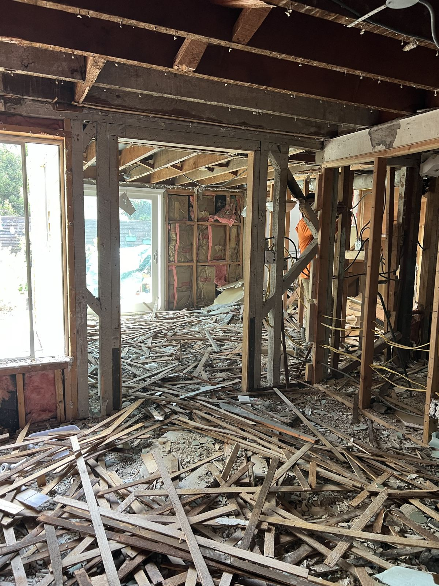
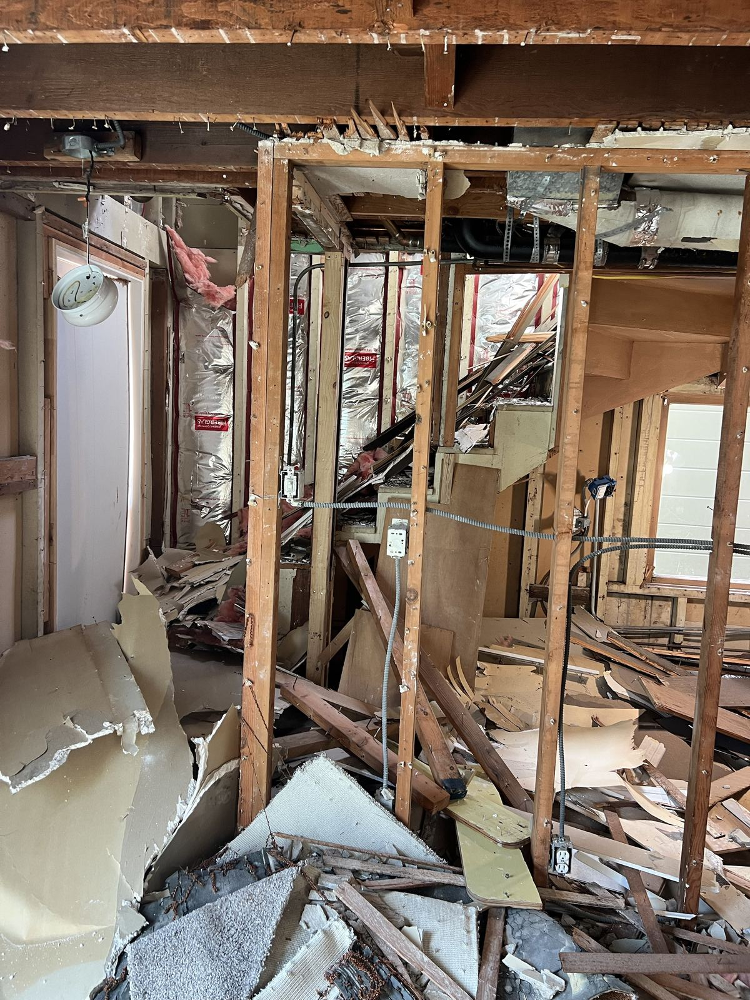
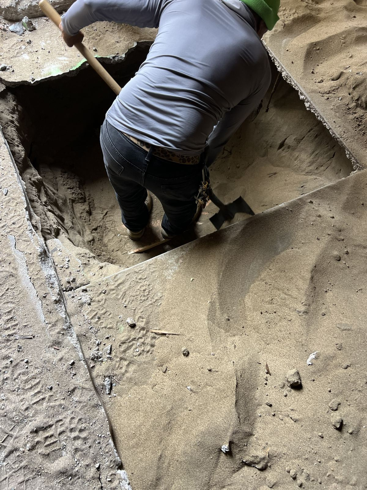
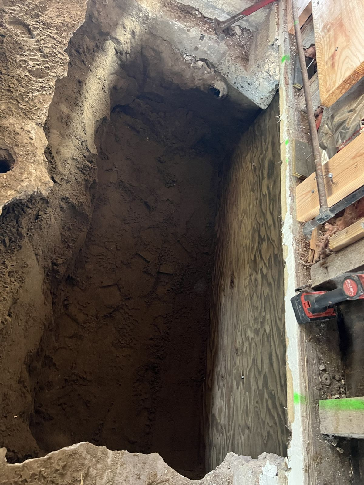
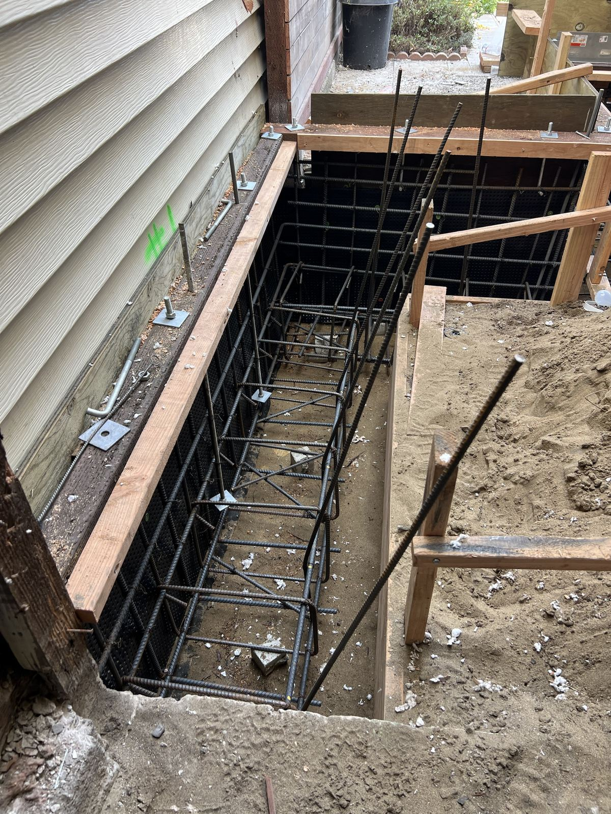
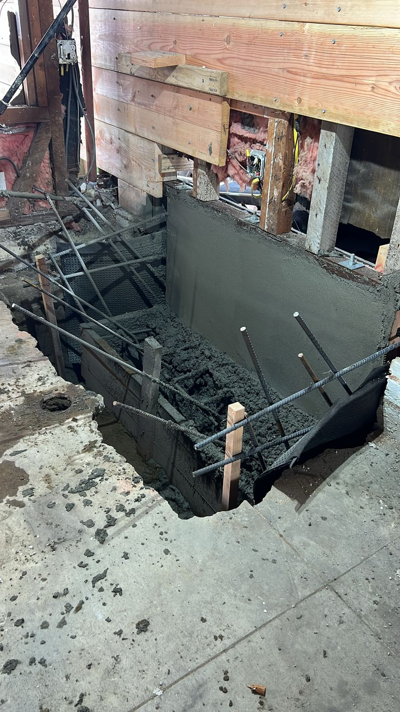
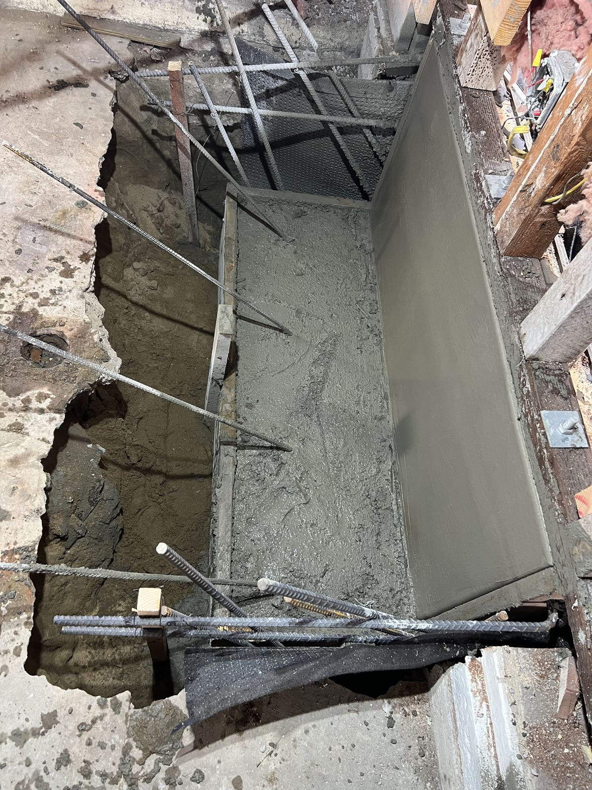
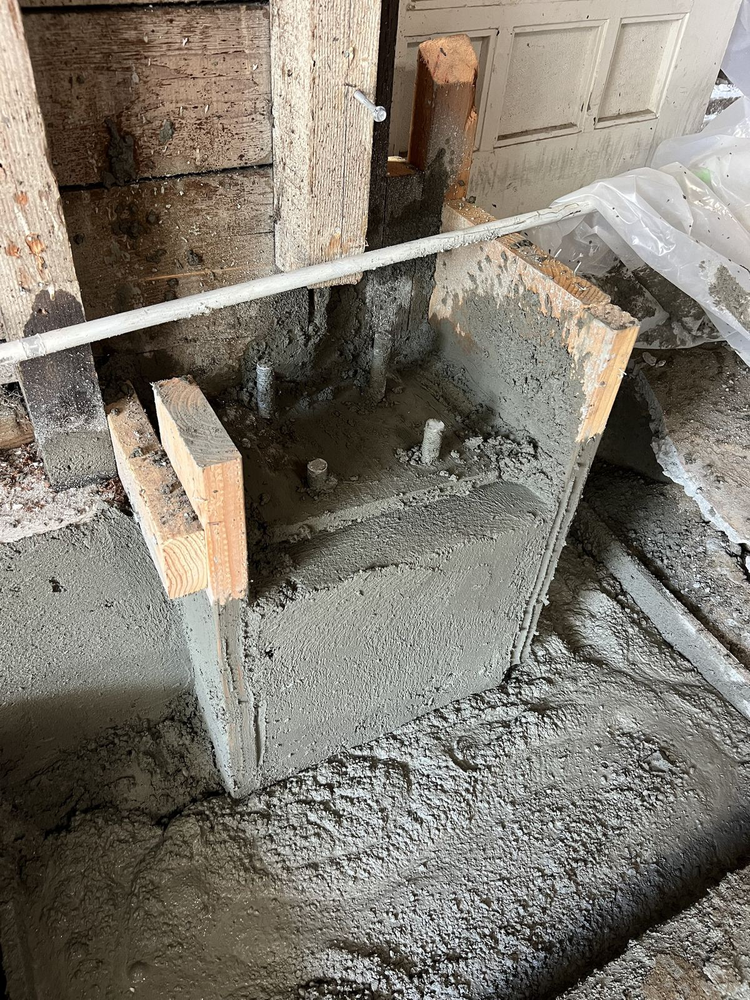

Project Journal · Central Richmond, San Francisco
By Solid Bay Construction SF | Updated 2026
We're currently mid-project on a full remodel in San Francisco's Central Richmond neighborhood: a 3rd story addition, a complete foundation retrofit, and a full interior gut and rebuild. This page follows the actual construction — real photos, updated as the work progresses, not a rendering or a stock case study.
Before any structural work begins, the interior comes down to studs. This lets us verify the actual framing condition — not just what's on the original permit drawings — and catch anything that needs to be addressed before the addition and foundation work move forward.


You can't add a 3rd story to a house without confirming the foundation can carry the extra load — and in the Central Richmond, that check almost always turns up work that needs to happen. Much of the Outer and Central Richmond was built on reclaimed dune sand in the early 20th century, and many of these homes still sit on the original, undersized 1920s–1940s foundations. Adding weight above without reinforcing what's below is how you end up with cracked stucco, uneven floors, and settlement issues years down the line.
For this project, that meant a full foundation retrofit: excavating along the perimeter, tying in new rebar cages, and pouring reinforced concrete stem walls and pier footings sized for the new 3rd story load — not just patching what was already there.






With the foundation work complete, the next phase is framing the 3rd story addition and roughing in new electrical and plumbing throughout the house. We'll keep updating this page and the project gallery on our homepage as it moves forward.
Planning an addition or foundation retrofit in San Francisco?
Get a Free Consultation →